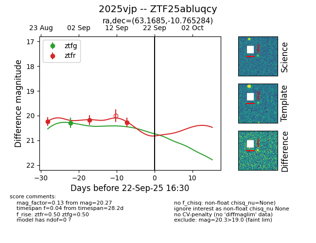
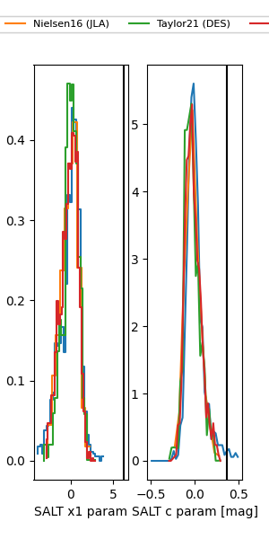

FINK: ZTF25abluqcy
Lasair: ZTF25abluqcy
ALeRCE: ZTF25abluqcy
TNS: 2025vjp
YSE: 2025vjp
ZTF25abluqcy (ztf,fink)
2025vjp (tns,yse)
equatorial (ra, dec) = (63.1685,-10.76528)
galactic (l, b) = (203.9232,-40.05752)


last ztfg=20.29, ztfr=20.27
1 ztfg, 3 ztfr detections